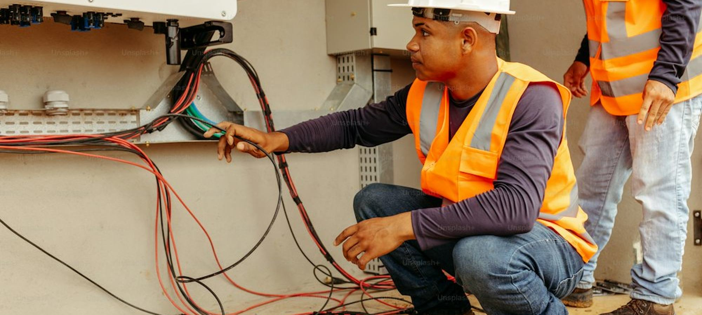

Quel organisme pour un CAP électricien à distance en 2026 ?
10 organismes de formation à distance comparés sur le seul CAP électricien, programmes publiés en main.

CAP électricien, froid et conditionnement d'air, plomberie, menuiserie. Ce sont les métiers où l'emploi attend à la sortie. Nous comparons les programmes publiés, les habilitations couvertes et les tarifs.

10 organismes de formation à distance comparés sur le seul CAP électricien, programmes publiés en main.


10 organismes de formation à distance comparés sur le seul CAP électricien, programmes publiés en main.
Six diplômes et certifications mènent au métier de frigoriste, du CAP en 12 mois au BTS en deux ans.
Deux écoles à distance, un seul diplôme d'État à la sortie.
Douze écoles de formation à distance passées au crible sur le CAP cuisine, tarifs affichés relevés sur les sites officiels en septembre 2026, volumes horaires annoncés et nombre de devoirs pratiques réellement corrigés par un formateur.
Quatre voies principales mènent au CAP pâtissier après 25 ans, plus trois variantes que peu de candidats connaissent.

Dix écoles préparant le BTS Diététique hors présentiel, tarifs relevés sur les sites officiels en septembre 2026, de 1 590 € à 4 490 € pour les deux années.
Note globale sur 10 sur le seul univers bâtiment. Les habilitations couvertes et la préparation aux épreuves pratiques comptent double, ce sont elles qui conditionnent l'embauche.
Voir la méthode de notation


Comparez deux organismes sur nos cinq critères en un clic.
Sur nos relevés de septembre 2026, L'atelier des Chefs prend la première place de l'univers bâtiment avec 8,7/10, devant École Chez Soi à 8,3/10 et le CNED à 8,1/10. Le détail des dix organismes est dans notre comparatif.
Oui, c'est le métier du bâtiment le plus tendu du moment. Les épisodes de canicule à répétition ont fait exploser la demande de pose et de maintenance de climatisation, et les entreprises du froid commercial peinent à recruter depuis trois ans.
Non. L'habilitation électrique relève de l'employeur et se renouvelle tous les trois ans. Le CAP apporte le diplôme, pas l'habilitation, qui passe par une formation courte de deux à trois jours.
De 1 090 € au CNED à 3 490 € chez les écoles les plus complètes, l'écart venant surtout du matériel pédagogique fourni et du nombre de devoirs corrigés. La moyenne du panel s'établit à 2 340 € en septembre 2026.
C'est le même diplôme. Le CAP Préparation et réalisation d'ouvrages électriques, dit PRO Élec, a été rebaptisé CAP Électricien lors de la réforme du référentiel. Les deux appellations circulent encore dans les catalogues.
Un email par semaine, le classement du mois, les nouveaux comparatifs de formations et les sessions qui ouvrent.
Pas de publicité, désinscription en un clic.